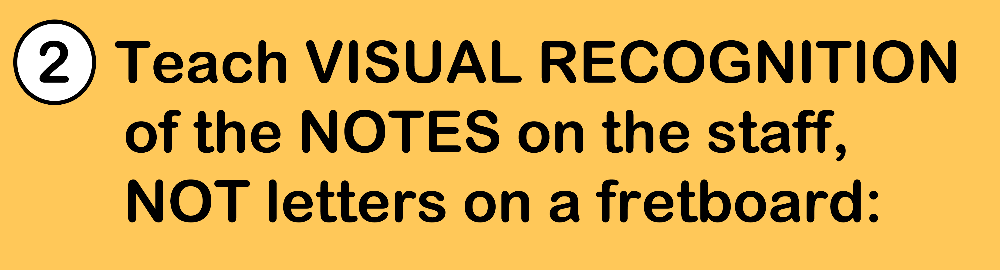
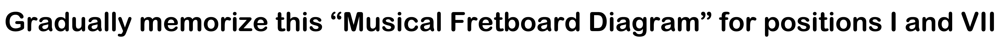
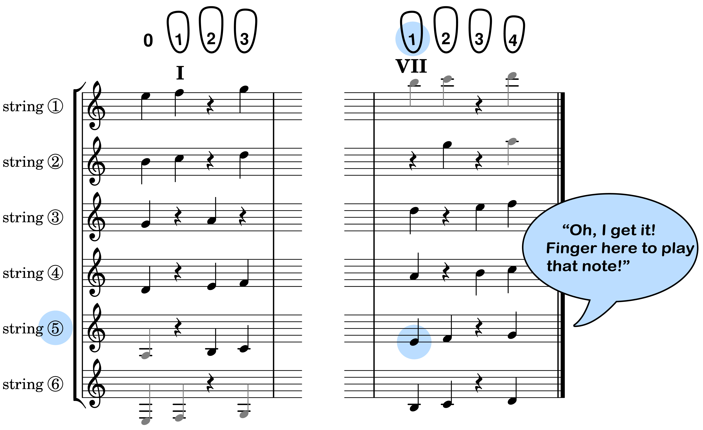
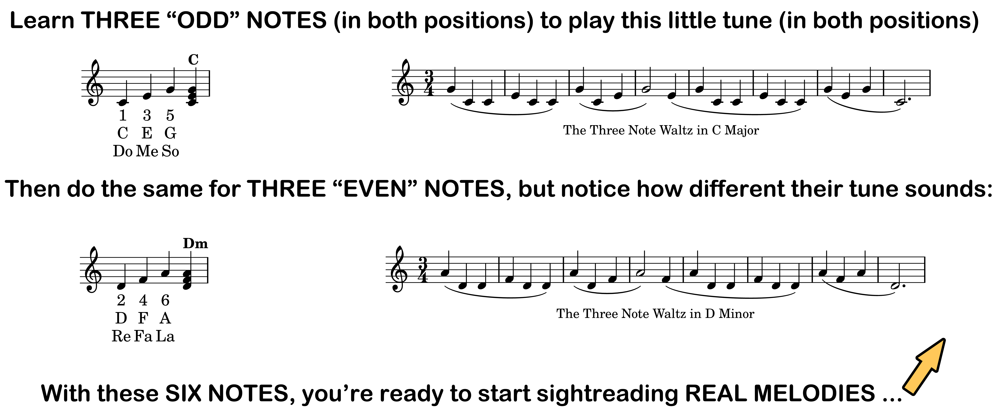

Like a tennis player returning a serve, sightreading demands a fast motor response to a visual stimulus. Being aware of your current position, when you see a note (visual stimulus) you move to play it (motor response). Your mental mapping (what you've memorized) needs to be as direct as that: NOTE => RESPONSE.
That's why you don't want your mental mapping to be "an alphabet on a fretboard". That would require an extra cognitive step in real time to recall the name of the note you're seeing in the music before you can respond; i.e. NOTE => NAME => RESPONSE.
The method below gives faster responses without the Every-Good-Boy-Does-Fine hassle.


First figure out how it tells where to finger each note, so you can play any note you look at (actually do it). Then memorize just the "three odd notes" shown below to begin sightreading. For a more complete explanation see Learn This One Page.

The above memorization is purely visual-spatial. There are no intermediate linguistic mnemonics or numbers to remember. Just an image that helps you imagine touching those notes with your fingers wrapped around the neck. Your brain sees the note and associates it with how your fingers reach for it. That's what you memorize.
